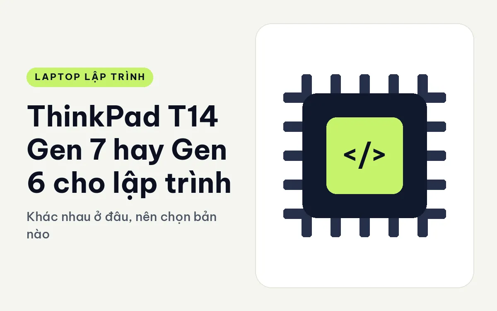
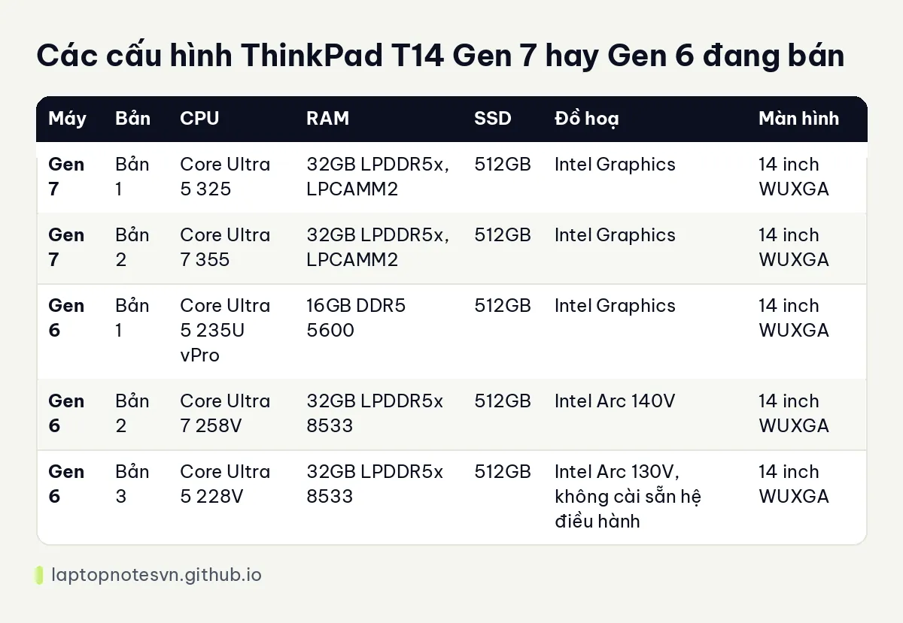

ThinkPad T14 Gen 7 hay Gen 6 cho lập trình - Khác nhau ở đâu, nên chọn bản nào

Ai đang cầm trên tay hai tờ báo giá T14, một đời 2025 và một đời 2026, thường hỏi cùng một câu: trả thêm cho đời mới thì code có nhanh hơn không. Câu trả lời ngắn là máy không nhanh lên theo kiểu bạn bấm build thấy khác hẳn. Khác biệt nằm ở cân nặng, pin, cách gắn RAM và vài bản cấu hình được chọn lại. Bài này đặt ThinkPad T14 Gen 7 (2026) cạnh đời trước để bạn thấy khác ở chỗ nào.
Đời trước ở đây là ThinkPad T14 Gen 6 (2025), hiện vẫn còn ba bản cấu hình để chọn.
Cả hai cùng là máy doanh nghiệp 14 inch, cùng màn WUXGA 1920x1200 chống chói, cùng bàn phím ThinkPad quen tay. Người đã dùng T14 đời nào cũng sẽ thấy máy kia không xa lạ.
Thân máy và trọng lượng của ThinkPad T14 Gen 7 và Gen 6
Gen 7 nặng khởi điểm 1,29 kg, dày từ 15,88 đến 21,95 mm. Gen 6 nặng 1,53 kg, kích thước 315,9 x 223,7 mm. Chênh lệch 240 gram nghe nhỏ, nhưng nếu ngày nào bạn cũng nhét máy vào ba lô cùng sạc, chuột và sách thì con số này cảm nhận được sau một tuần.
Gen 7 vẫn giữ đủ cổng: 2 cổng Thunderbolt 4, 2 cổng USB-A 5Gbps, HDMI 2.1, jack tai nghe và cả cổng mạng RJ45. Với dev hay cắm dây mạng ở công ty hoặc ngồi ở quán có Wi-Fi chập chờn, cổng RJ45 còn tiện hơn nhiều so với bộ chuyển đổi hay rơi mất. Gen 6 cũng có Thunderbolt 4 và HDMI, nhưng mô tả máy không liệt kê chi tiết số cổng như Gen 7.
Về pin, Gen 7 có hai tuỳ chọn 60Wh và 75Wh, sạc nhanh được khoảng 80% trong 60 phút khi dùng đúng adapter. Gen 6 dùng pin khoảng 52,5Wh, thời gian dùng thực tế mô tả ở mức 9 đến 12 giờ cho việc nhẹ.
Các bản cấu hình ThinkPad T14 Gen 7 và Gen 6 đang có
Bảng dưới liệt kê từng bản có trong dữ liệu cửa hàng. Gen 7 hiện có hai bản, cả hai đều 32GB RAM. Gen 6 có ba bản với RAM và GPU tích hợp khác nhau.

| Máy | Bản | CPU | RAM | SSD | Đồ hoạ | Màn hình |
|---|---|---|---|---|---|---|
| Gen 7 | Bản 1 | Core Ultra 5 325 | 32GB LPDDR5x, LPCAMM2 | 512GB | Intel Graphics | 14 inch WUXGA |
| Gen 7 | Bản 2 | Core Ultra 7 355 | 32GB LPDDR5x, LPCAMM2 | 512GB | Intel Graphics | 14 inch WUXGA |
| Gen 6 | Bản 1 | Core Ultra 5 235U vPro | 16GB DDR5 5600 | 512GB | Intel Graphics | 14 inch WUXGA |
| Gen 6 | Bản 2 | Core Ultra 7 258V | 32GB LPDDR5x 8533 | 512GB | Intel Arc 140V | 14 inch WUXGA |
| Gen 6 | Bản 3 | Core Ultra 5 228V | 32GB LPDDR5x 8533 | 512GB | Intel Arc 130V, không cài sẵn hệ điều hành | 14 inch WUXGA |
Có một điểm dễ bỏ sót: bản 16GB duy nhất nằm ở Gen 6. Ai chỉ cần máy viết web và chạy vài container nhẹ có thể bắt đầu từ bản đó, còn lại hai đời đều có bản 32GB để dùng thoải mái.
Về nâng cấp, Gen 7 dùng mô-đun LPCAMM2, nghĩa là RAM là một thanh gắn được chứ không hàn chết lên bo mạch, và mô tả máy ghi hỗ trợ lên đến 64GB. Gen 6 thì mô tả ghi rõ không nâng cấp RAM được. Đây là khác biệt thực tế nhất giữa hai đời nếu bạn tính giữ máy 4 đến 5 năm.
ThinkPad T14 Gen 7 hợp việc gì, Gen 6 hợp việc gì
Web và backend nhẹ. Cả hai đều dư sức. Trình soạn thảo, Node, vài tab trình duyệt và một database local không làm khó máy 32GB nào trong bảng.
Docker và máy ảo. RAM là thứ quyết định. Gen 7 với 32GB và đường lên 64GB là lựa chọn an toàn hơn nếu bạn chạy compose nhiều service. Gen 6 bản 32GB làm được tương tự ở hiện tại, nhưng sau này không có đường nâng. Bạn có thể đọc thêm cách tính RAM ở trang dev cần bao nhiêu RAM để chạy IDE, Docker và trình duyệt cùng lúc.
Build lớn (C++, Rust, Android). Hai đời đều không có GPU rời, nên chuyện ép xung hay dựng hình 3D không phải thế mạnh. Gen 7 bản Core Ultra 7 355 và Gen 6 bản Core Ultra 7 258V đều là chip tiết kiệm điện cho máy mỏng, khác nhau về kiến trúc. Dữ liệu không có số đo build nên bài này không xếp hạng tốc độ, bạn nên tự thử với dự án của mình nếu có dịp.
Chạy mô hình AI nhỏ. Gen 7 có NPU 47 đến 49 TOPS, Gen 6 bản V cũng 40 đến 47 TOPS, riêng bản 235U chỉ 12 TOPS. Dev chưa dùng NPU nhiều trong công việc hằng ngày, nhưng nếu bạn muốn thử các công cụ chạy cục bộ, chọn bản có NPU cao sẽ đỡ phải đổi máy sớm.
Chốt lại giữa ThinkPad T14 Gen 7 và Gen 6
- Chọn Gen 7 nếu bạn mang máy đi nhiều, muốn pin lớn, cần cổng mạng và muốn sau này tăng RAM bằng cách thay thanh LPCAMM2. Thêm nữa, mô tả máy ghi điểm sửa chữa iFixit 10/10, nhiều linh kiện như pin, quạt, bàn phím, SSD thay được.
- Chọn Gen 6 bản 16GB nếu ngân sách hẹp và việc của bạn là web, scripting, học lập trình. Đây là cách vào dòng T14 với mức chi thấp hơn.
- Chọn Gen 6 bản 32GB nếu bạn cần RAM ngay nhưng chấp nhận máy nặng hơn và không có đường nâng RAM. Bản Arc 140V có đồ hoạ tích hợp khá hơn bản chỉ Intel Graphics, hợp ai hay xuất hình ra hai màn hình ngoài hoặc cần đồ hoạ vừa phải.
Nếu chưa chắc, bạn có thể xem bài viết riêng về T14 Gen 7 cho lập trình để nắm thêm cách dùng máy hằng ngày, rồi quay lại bảng trên chọn bản.
Đăng ngày 09/11/2026